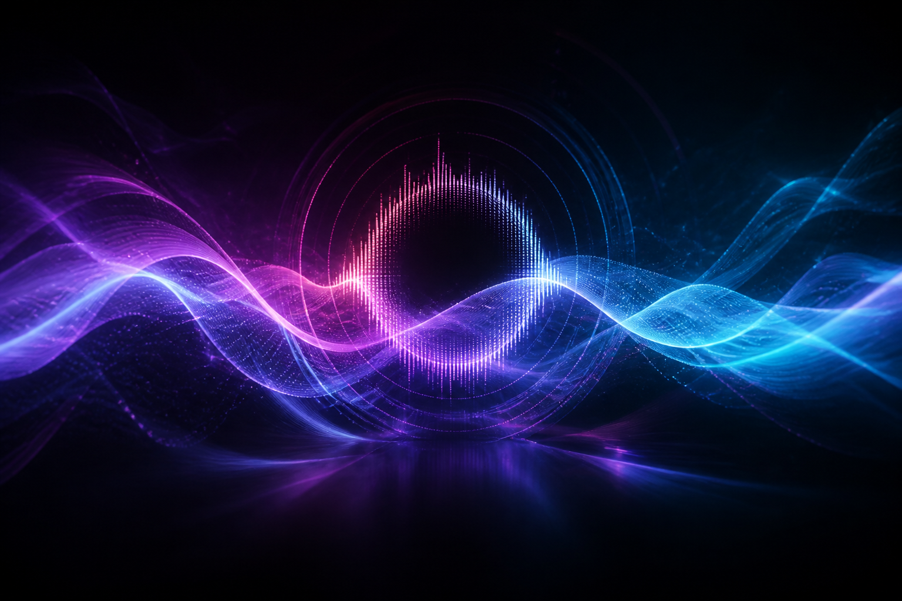

Live Performances
DJs and musicians can pair their sets with dynamic visuals that sync perfectly to every beat, turning a concert into a fully immersive show.
Audio-driven Universal Reactive Art
A platform that generates interactive media from the music you give it.

AURA is a creative technology platform designed to bridge the gap between sound and visual experience. By analyzing the structure, rhythm, mood, and energy of a piece of music, AURA generates interactive media that moves, responds, and evolves in real time alongside the audio.
Whether you are a musician, a visual artist, a game developer, or simply someone who loves immersive experiences, AURA turns passive listening into active, living art.
Provide a track — a full song, a loop, or even a short sample. AURA accepts the audio as the foundation for everything that follows.
The platform listens deeply to your music. It detects tempo, beats, frequency ranges, dynamics, and emotional tone to understand how the sound behaves over time.
Based on that analysis, AURA creates interactive visual media — shapes, colors, motion, and environments that react to every note, drop, and silence in the track.
The result is not a static video. It is a living experience you can watch, touch, and explore as the music plays.
DJs and musicians can pair their sets with dynamic visuals that sync perfectly to every beat, turning a concert into a fully immersive show.
Independent artists can generate unique, interactive promotional content that stands out from static images and pre-rendered videos.
Developers can use AURA to build worlds and effects that respond to a custom soundtrack or user-uploaded music.
Galleries and public spaces can host audio-reactive installations where the audience shapes the experience through sound and movement.
AURA aims to become the go-to platform where music and interactivity meet. We believe every song carries a visual story waiting to be told — and that story should not be fixed. It should breathe, shift, and respond.
Our long-term goal is to empower creators of all backgrounds to build rich, audio-driven experiences with minimal friction, opening a new medium where listening and interaction are one and the same.
AURA is currently in development. Soon, you will be able to upload a track, generate your first interactive experience, and share it with the world.
Stay tuned — the future of music-driven media is just getting started.